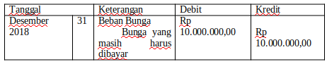
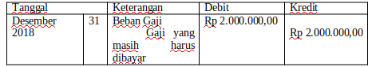
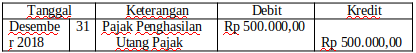

a. Pembebanan Biaya Bunga
Contoh Soal :
Tanggal 1 Agustus 2018 PD. Himalaya mengeluarkan 24% obligasi, dengan nominal Rp 100.000.000,00 bunga dibayar tiap tanggal 1 februari dan 1 agustus.
Diminta: Buatalah jurnal yang diperlukan.
Jawab :
1 agustus – 31 desember = 5bulan
5/12 x 24% x Rp 100.000.000,00 = Rp 10.000.000,00
Jurnal Penyesuaian :

b. Pembebanan Biaya Gaji
Contoh Soal :
Tanggal 31 desember 2018 terdapat 4 orang karyawan yang belum menerima gaji @500.000.
Jawab :
Perhitungan 4 x 500.000 = 2.000.000.
Jurnal Penyesuaian :

c. Pajak penghasilan
Contoh Soal :
Dalam daftar saldo 31 Desember 2018 Akun Pajak Penghasilan sebesar Rp2.000.000,00. Pada tahun ini ditetapkan oleh kantor pajak bahwa besarnya pajak Rp2.500.000,00 dari data ini maksudnya perusahaan sudah membayar ke kantor pajak sebesar Rp 2.000.000,00 dan oleh kantor pajak pada akhir periode ditetapkan pajak yang harus dibayar perusahaan sebesar Rp2.500.000,00. Berarti perusahaan masih menanggung beban pajak Rp 500.000,00. Jurnal penyesuaian yang dibuat perusahaan adalah?
Jawab :
